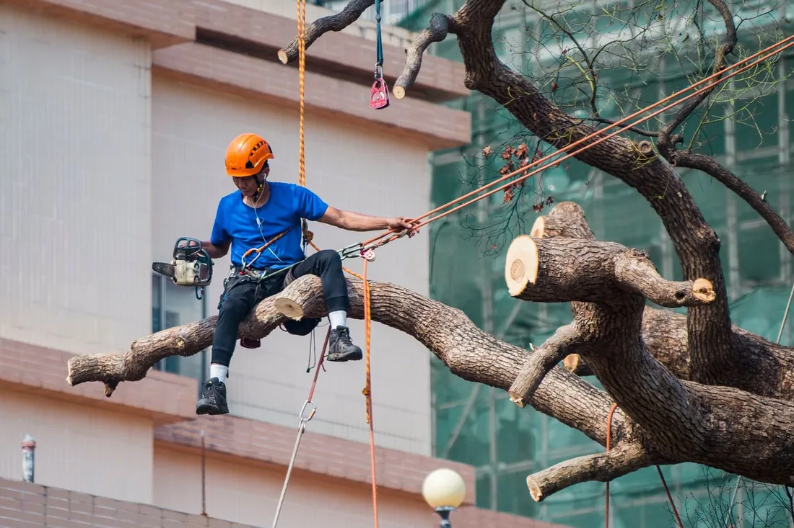

Canopy thinning that actually reduces wind load, roof and driveway clearance, deadwood removal, and oak work timed around the Texas oak wilt window.

Tree trimming in Galveston, TX is the difference between a canopy that lets a Gulf wind through and one that catches it. We prune live oaks, magnolias, crepe myrtles, yaupons and everything else that grows on the island, working across Galveston from the Silk Stocking District and Denver Court to Fish Village and the West End subdivisions. The work is selective: dead wood out, weak attachments reduced, clearance restored over roofs and drives, and every oak cut painted on the spot.
Good pruning is a series of decisions about which specific branches leave. It is not shaping, and it is not taking a percentage off the top.
A crew works through the canopy removing four categories: dead and dying limbs, branches rubbing or crossing each other, weak V-shaped attachments likely to split, and interior growth that makes the crown too dense to pass air. Cuts land just outside the branch collar, the swollen ring where a limb joins the trunk, because that is the tissue the tree uses to seal the wound. A flush cut removes that tissue and leaves a hole the tree cannot close.
Clearance work is the other half. Limbs over a roof get shortened back to a lateral branch rather than stubbed, and anything within ten feet of a service drop is either handled with the right gear or referred to the utility.
Because most storm failure on Galveston Island is not about the tree being weak. It is about leverage.
A dense crown behaves like a solid surface in wind. The force it collects gets transferred straight down into a root plate that, in island sand with almost no clay, is wide and shallow rather than deep. The tree does not break — it levers out of the ground. That is why so many post-storm photos here show whole root plates standing on end rather than snapped trunks.
Topping makes this worse in a way people find counterintuitive. Cutting a canopy back to stubs triggers a flush of fast, dense regrowth attached only to the outer wood at the cut. Within a few years the tree has a heavier, denser crown than before, sitting on attachments that were never structural. The 2008 storm demonstrated the point across the island, and the same pattern shows up after every named storm since.
Avoid pruning oaks between February 1 and June 30. That is when the sap-feeding beetles carrying the oak wilt fungus are active, and a fresh oak wound can draw them within fifteen minutes. If a limb is an immediate hazard we will still cut it in April — and paint it before we come down. For everything else, we book it for July.
| Job | Typical range | Notes |
|---|---|---|
| Small ornamental, under 20 ft | $150 – $350 | Crepe myrtle, yaupon, ligustrum |
| Mature live oak canopy trim | $350 – $900 | Most common island job |
| Large multi-stem or 60 ft plus | $800 – $1,800 | Climbing, rigging over structures |
| Deadwood only, mature tree | $250 – $600 | Faster than a full reduction |
| Roof and drive clearance | $200 – $500 | Often bundled with a full trim |
Thinning removes selected branches throughout the crown, keeping the tree’s natural shape and its ability to make food. Wind moves through the gaps. The tree seals the wounds and the work holds for three to five years. This is what we do, and it is what any certified arborist will recommend.
Topping cuts the crown back to stubs at a uniform height. It is faster, it looks decisive, and it gets sold along this coast every spring as storm preparation. It leaves large wounds the tree cannot seal, invites decay into the trunk, and produces regrowth that is more likely to fail than what it replaced. It also permanently changes the tree’s shape.
If a tree is genuinely too big for its spot, the honest answer is usually a crown reduction done properly over two visits, or a tree removal in Galveston and a replant with something suited to the space. We will say so rather than sell you a topping job.
For oaks, July through January. Texas A&M Forest Service asks Texans to avoid pruning oaks between February 1 and June 30 because the sap-feeding beetles that carry oak wilt are most active then. Most other Galveston species can be pruned year-round, though the practical window is late winter through early spring, before hurricane season and before nesting.
Thinning the canopy and removing dead wood does help, because wind passes through a thinned crown instead of pushing on it. Topping does the opposite. A topped tree responds with dense, weakly attached regrowth that acts like a sail and snaps at the attachment point. Real storm pruning is selective, not a haircut.
A mature live oak canopy trim generally runs $350 to $900 in Galveston, depending on whether the crew can work from a bucket or has to climb, and how much dead wood has accumulated. Smaller ornamentals like crepe myrtle and yaupon usually fall between $150 and $350. Several trees on one visit cost less per tree than booking them separately.
Mature live oaks do well on a three to five year cycle. Fast growers like Chinese tallow and hackberry need attention every two years or they get away from you. Anything with limbs over a roof should be checked annually before June, since a single season of growth is often enough to put a branch back on the shingles.
Yes, every time, in every month. Texas guidance is to paint fresh oak wounds immediately regardless of season, because the beetles that spread oak wilt are drawn to fresh sap within minutes of a cut. It costs us almost nothing and it is the single cheapest piece of insurance on an oak.
June through November is the wrong time to discover a limb over the bedroom. Get on the schedule while the calendar is still on your side.
Call (409) 255-0582 for a Free Estimate